💙 AI Journal Analyzer — User Manual
A personal journaling platform with habit tracking, AI insights, a full calendar, and a complete NA Recovery toolkit — all saved to your private PostgreSQL database.
Version 2.0 · Watson TechTable of Contents
Overview
AI Journal Analyzer is a self-hosted web application that runs at http://localhost:3001. Everything is stored in a private PostgreSQL database — no cloud, no data sharing. The app has two major sections:
Write daily entries, attach moods, track habits, browse a calendar, and get AI-powered writing insights.
Sobriety counter, meeting tracker, sponsor management, 12-step progress, and daily recovery tasks.
Charts for entry frequency, mood trends, writing patterns, and words written over time.
Upload and organise files and photos in a folder-based file manager linked to your journal.
Navigation
The left sidebar contains every section of the app. Click any nav item to switch instantly — no page reloads. The active tab is highlighted in purple.
| Nav Item | What it does |
|---|---|
| 🏠 Dashboard | Stats, sobriety counter, NA recovery preview, activity heatmap |
| ✏️ Add Entry | Write a new journal entry with mood, habits, and tags |
| 📋 Entries | Browse, search, and edit all past journal entries |
| 🎯 Habits | 30-day habit grid — check off today's habits |
| 📅 Calendar | Monthly calendar with events and journal entry markers |
| 🤝 Meetings | NA meeting weekly grid with attendance tracking |
| 👤 Sponsor | Sponsor profile, 12-step progress, daily recovery tasks |
| 📁 Files | Upload and organise files and folders |
| 📊 Insights | AI analysis and writing charts |
| ⚙️ Settings | Manage habits and Claude AI key |
Themes
Click the theme toggle button (top-right of any page) to cycle through three visual themes:
| Icon | Theme | Description |
|---|---|---|
| ☀️ | Dark Mode | Default deep-navy dark theme — easy on the eyes |
| 🌙 | Light Mode | Clean white/slate light theme |
| 💙 | NA Recovery Theme | Deep navy + gold accent — colours of NA recovery |
Dashboard
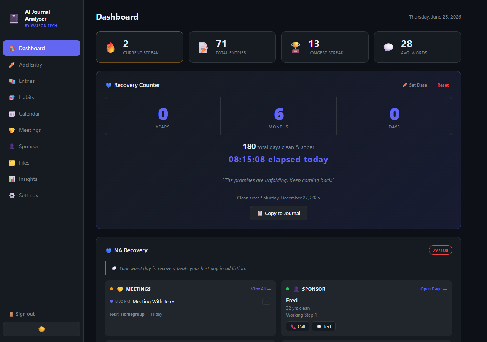
Dashboard — stats bar and Recovery Counter
The Dashboard is your home base. It gives you an at-a-glance view of your journaling activity and recovery progress.
Stats Bar
Four cards at the top show your key journaling metrics:
- 🔥 Current Streak — consecutive days you've written a journal entry
- 📝 Total Entries — all entries ever written
- 🏆 Longest Streak — your personal best consecutive-day record
- 💬 Avg. Words — average word count per entry
Activity Heatmap
A GitHub-style heatmap shows the past 12 months of journaling activity. Darker green = more entries that day. Hover any cell to see the date and entry count.
Sobriety Counter
The Recovery Counter card sits at the top of the Dashboard. It tracks how long you have been clean and sober with a live ticker.
Setting Your Clean Date
- Click ✏️ Set Date on the Recovery Counter card.
- A date picker modal opens. Enter the date you got clean.
- Click Save. The counter updates immediately.
The counter displays:
- Years / Months / Days clean
- Total days as a number
- Live HH:MM:SS ticker — counts every second
- Your clean date — "Clean since Saturday, December 27, 2025"
- Daily motivational quote from the NA literature
Copy to Journal
Click 📋 Copy to Journal to paste a pre-formatted sobriety update directly into a new journal entry.
Reset
Click Reset (red) to clear the date. This does not delete your journal entries — only the sobriety date stored in the database.
NA Recovery Dashboard New
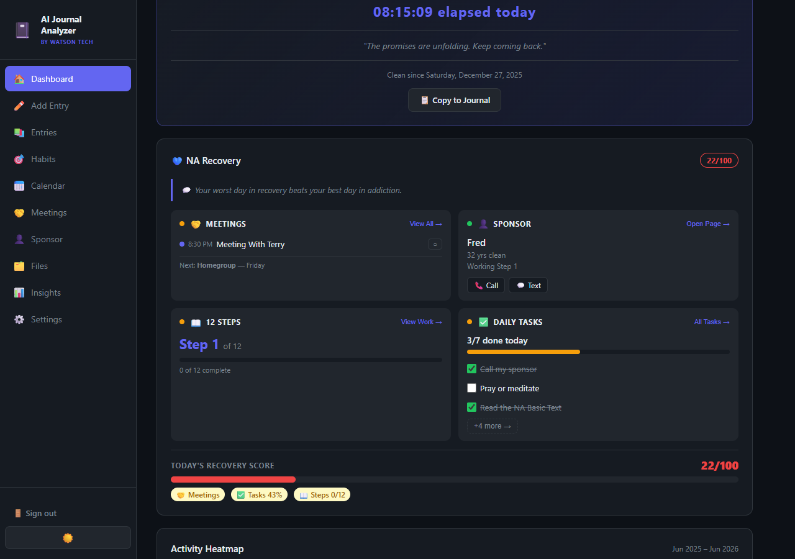
NA Recovery Dashboard — 4 preview cards + Today's Recovery Score
Beneath the Sobriety Counter is the NA Recovery widget. It shows four preview cards and a Recovery Score — all at a glance without leaving the Dashboard.
Daily Motivational Quote
A recovery-focused quote appears each day (rotates daily). Quotes are drawn from public-domain recovery wisdom.
The 4 Preview Cards
Shows today's scheduled meetings. Check-in as attended with one tap. Shows next upcoming meeting day.
Sponsor name, years clean, current step. Tap-to-call and tap-to-text buttons if a phone number is saved.
Current step number, progress bar, and count of completed steps. Tap "View Work →" to open the Sponsor page.
Tasks completed today with a progress bar. Check off tasks directly from the card. Tap "All Tasks →" for the full list.
Status Dots
Each card has a colour-coded dot in the top-left corner:
| Colour | Meaning |
|---|---|
| 🟢 Green | Complete / all good — meeting attended, sponsor set, steps in progress |
| 🟡 Yellow | Pending — today's meeting not yet attended, tasks partially done |
| 🔴 Red | Overdue — tasks not started today |
| ⚪ Gray | Nothing set up yet |
Today's Recovery Score
A score from 0 to 100 is calculated at the bottom of the widget:
| Category | Points | How to earn |
|---|---|---|
| 🤝 Meetings | 30 pts | Attend today's meeting (or no meeting = full points) |
| ✅ Daily Tasks | up to 50 pts | Proportional to % of tasks completed |
| 📖 Steps | up to 20 pts | 10 pts for completing any step, 10 pts for being past Step 1 |
Add Entry
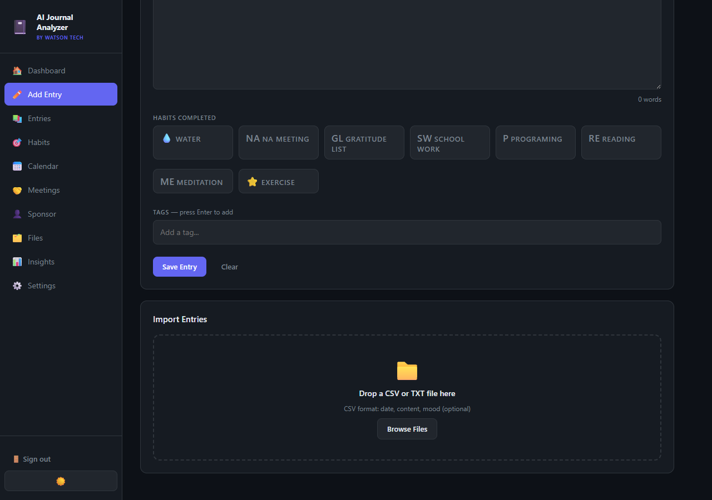
Add Entry — write, pick habits, add tags, import
This is where you write your daily journal entries. Every entry is timestamped and saved to the database.
Writing an Entry
- Click Add Entry in the sidebar.
- Type your entry in the large text area. The word count updates live.
- Optionally select a mood (1–5 scale or emoji) at the top.
- Click any habit badges to mark habits completed for today.
- Add optional tags by typing in the tags field and pressing Enter.
- Click Save Entry.
Habit Badges
All habits you've configured in Settings appear as clickable chips. Selected habits (highlighted) will be logged as completed for today's date when you save.
Tags
Type a word and press Enter to add a tag. Tags help you filter and search entries later. Click an existing tag chip to remove it.
Import Entries
The bottom of the Add Entry page has an import zone. Drag and drop a CSV or TXT file to bulk-import past journal entries.
- CSV format:
date, content, mood (optional) - TXT format: plain text, one entry per paragraph
Entries
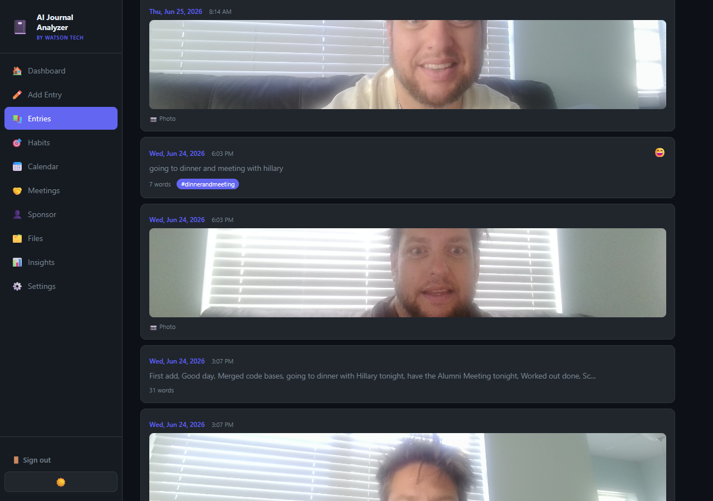
Entries — chronological feed with photos
The Entries page shows all your journal entries in a reverse-chronological feed. Entries that have attached photos display a thumbnail preview.
Searching & Filtering
- Use the search bar at the top to search by keyword across all entries.
- Filter by mood or tag using the filter chips.
- Entries are paginated — scroll down to load older entries.
Editing an Entry
Click any entry card to expand it. Click the Edit button to open it in the editor. Click Delete to permanently remove an entry.
Habits
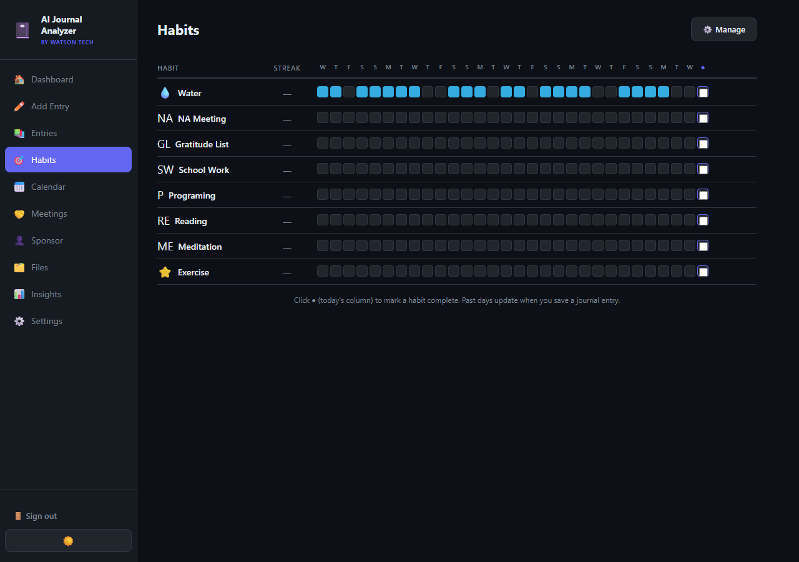
Habits — 30-day grid with today's checkbox column
The Habits page shows a 30-day rolling grid. Each row is a habit; each column is a day. Filled (cyan) cells = completed. Empty cells = not completed.
Logging Habits
- The rightmost column (●) is today. Click a cell to toggle today's habit.
- Past days are filled automatically when you save a journal entry with those habits checked.
Managing Habits
Click ⚙️ Manage (top-right) or go to Settings to add or remove habits. Each habit has a name, colour, and optional emoji icon.
Calendar
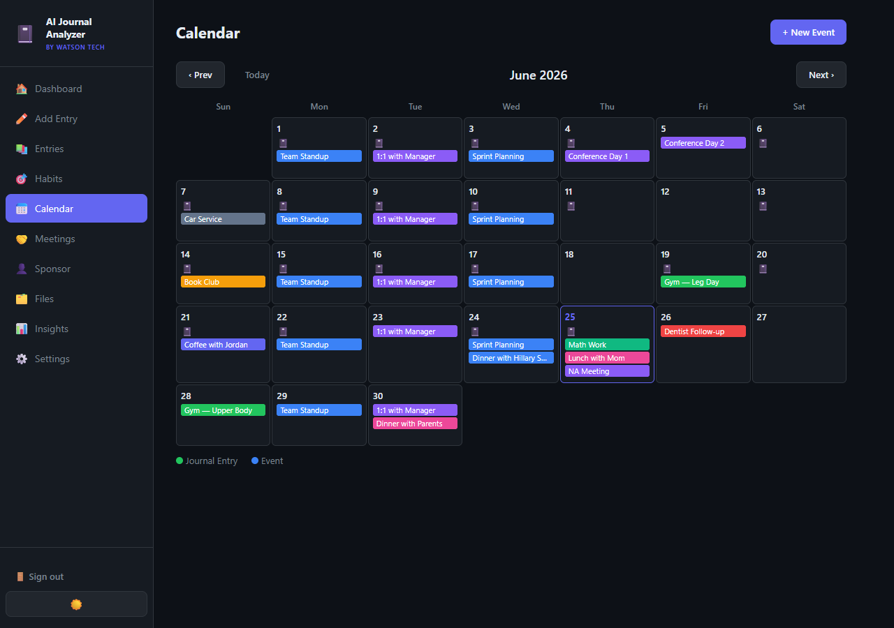
Calendar — monthly view with events and journal entry markers
The Calendar shows a full monthly grid. Two types of items appear on calendar days:
- 📓 Journal Entries — small notebook icon, appears on any day you wrote an entry
- Coloured events — calendar events you've created manually
Creating an Event
- Click + New Event (top-right) or click directly on a calendar day.
- Enter the event title, date, time, and optionally a colour.
- Click Save.
Viewing a Day
Click any day cell to open a popup showing that day's events and journal entry. You can read the full entry text directly in the popup.
Navigation
Use ‹ Prev and Next › to move between months. Click Today to jump back to the current month.
Insights
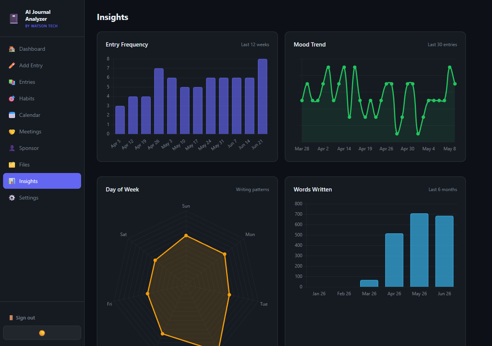
Insights — four analytical charts
The Insights page renders four charts based on your journal data:
| Chart | What it shows |
|---|---|
| 📊 Entry Frequency | Bar chart — entries per week over the last 12 weeks |
| 📈 Mood Trend | Line chart — mood score over the last 30 entries |
| 🕸️ Day of Week | Radar chart — which days of the week you write most |
| 📝 Words Written | Bar chart — total words per month for the last 6 months |
AI Analysis
Scroll down on the Insights page to find the Claude AI analysis section. Click Generate Insights to have the AI summarise patterns in your writing, identify recurring themes, and suggest reflection prompts.
Files
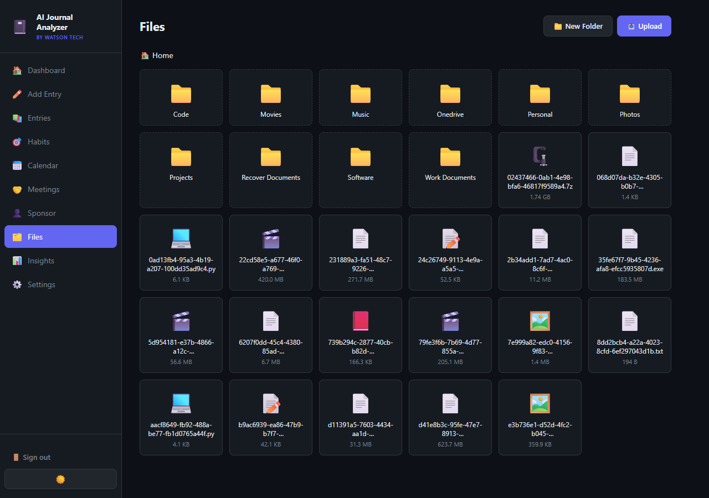
Files — folder-based file manager with upload support
The Files page is a full-featured file manager. You can store documents, photos, and any other files alongside your journal.
Uploading Files
- Navigate to the folder you want (or stay in Home).
- Click ⬆ Upload (top-right).
- Select one or more files. They upload immediately.
Creating Folders
Click 📁 New Folder to create a sub-folder. Double-click any folder to open it. The breadcrumb trail at the top shows your current path.
Downloading & Deleting
Click any file to preview it (images open inline). Hover a file card to reveal the Download and Delete buttons.
Settings
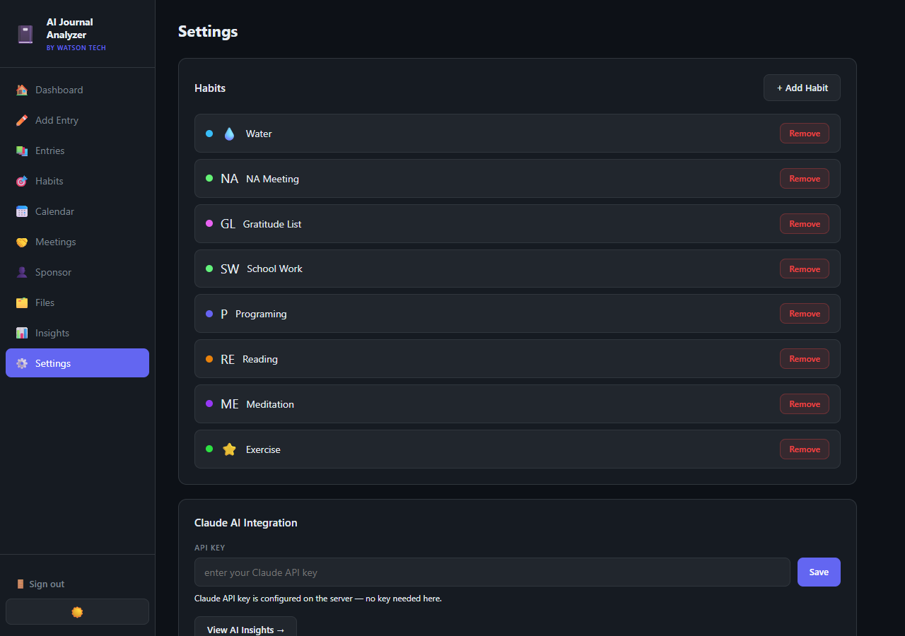
Settings — habit management and Claude AI key
Habits Management
The top section lists all current habits. Click + Add Habit to create a new one (enter a name, pick a colour, and an optional emoji). Click Remove to delete a habit permanently.
Claude AI Integration
If the ANTHROPIC_API_KEY is already set in the server's .env file, you'll see the message "Claude API key is configured on the server — no key needed here." You can also paste a key directly into the field and click Save for a per-session override.
NA Meetings NA Recovery
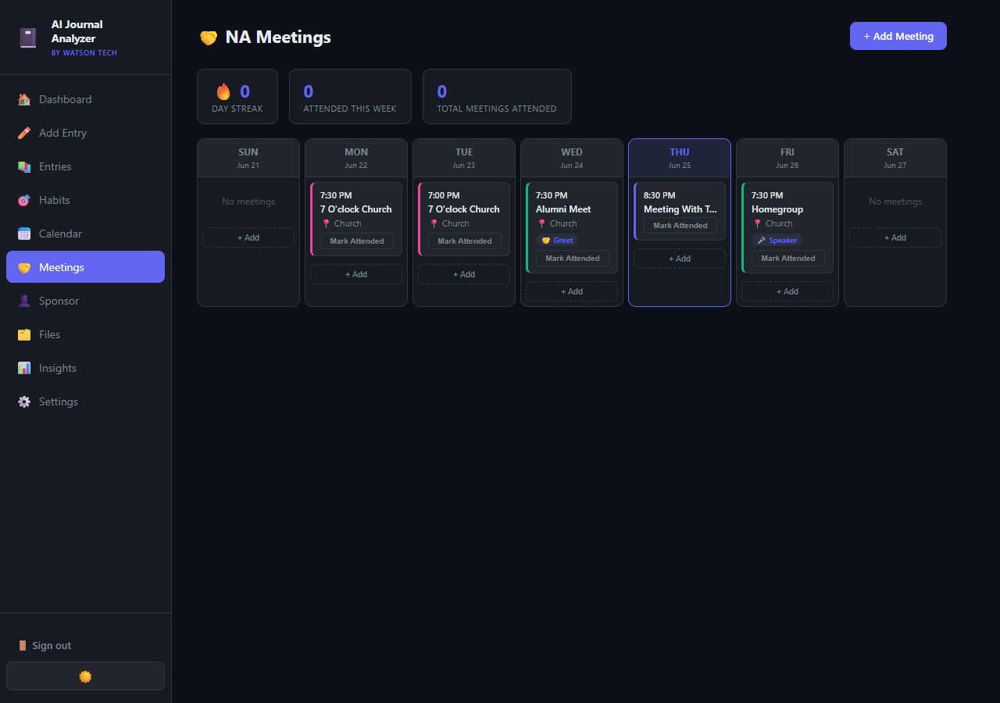
Meetings — 7-day weekly grid with attendance tracking
The Meetings page is your NA meeting schedule. It shows a 7-day week grid centred on today (highlighted in blue) with all your recurring meetings displayed in their day column.
Stats Bar
- 🔥 Day Streak — consecutive days with at least one meeting attended
- Attended This Week — meetings attended in the current 7-day window
- Total Meetings Attended — all-time attendance count
Adding a Meeting
- Click + Add Meeting (top-right) or the + Add button under any day column.
- Fill in the meeting name, day of week, time, and location.
- Choose your commitment type: Member, Chair, Read, Greet, Share, or Speaker.
- Pick a colour for the meeting card.
- Toggle Recurring if this meeting happens every week.
- Click Save Meeting.
Marking Attendance
Click the Mark Attended button on a meeting card to log that you attended today's meeting. The button turns green with a checkmark. Click again to un-mark.
Editing or Deleting a Meeting
Click a meeting card to open its edit modal. Make changes and click Save Meeting, or click Delete Meeting (red button at the bottom of the modal).
Sponsor & 12 Steps NA Recovery
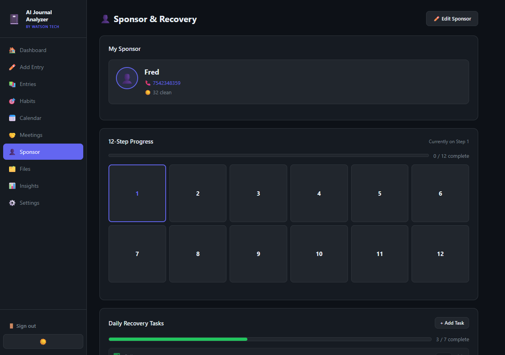
Sponsor & Recovery — sponsor profile and 12-step progress grid
The Sponsor page has three sections: your sponsor's profile, the 12-step progress grid, and your daily recovery tasks.
My Sponsor
Click ✏️ Edit Sponsor to open the sponsor modal and enter:
- Name, phone number, email
- Years clean
- Notes (private, stored only in your database)
Once saved, the sponsor card shows tap-to-call (📞) and tap-to-email (✉️) buttons.
12-Step Progress
The 6×2 grid shows all 12 steps. The step you're currently working on is highlighted with a blue border.
Working a Step
- Click any step box to open the step detail panel.
- Read the step description.
- Write notes in the My Notes textarea.
- Check Mark this step complete when you've finished it.
- Click Save Notes.
Completed steps turn solid blue. The current (in-progress) step shows a gold accent border. The progress bar at the top shows how many of the 12 steps you've completed.
Daily Recovery Tasks NA Recovery
Below the 12-step grid on the Sponsor page is the Daily Recovery Tasks section. Seven default tasks are pre-loaded:
- Call my sponsor
- Pray or meditate
- Read the NA Basic Text
- Send a gratitude list
- Attend a meeting
- Reach out to another addict in recovery
- Write in my journal
Completing Tasks
Check the checkbox next to any task to mark it done for today. Completed tasks get a strikethrough and the progress bar advances. Task completions reset automatically each day — you start fresh every morning.
Adding Custom Tasks
- Click + Add Task (top-right of the Daily Tasks section).
- Type the task name in the modal.
- Click Add Task.
Removing Tasks
Click the ✕ button beside any task (including the default tasks) to remove it. Removed tasks are deleted from the database.
Tips & Shortcuts
| Action | How to do it |
|---|---|
| Switch theme | Click the ☀️ / 🌙 / 💙 button (top-right of every page) |
| Quick-add a journal entry | Click Add Entry in the sidebar |
| Copy sobriety stats to journal | Click 📋 Copy to Journal on the counter card |
| Call your sponsor | Tap the 📞 Call button on the Sponsor card (opens phone app) |
| Text your sponsor | Tap the 💬 Text button on the Sponsor card |
| Check in at today's meeting (from Dashboard) | Click the ○ button on the meeting row in the Meetings card |
| Jump to Meetings from Dashboard | Click View All → on the Meetings preview card |
| Jump to Sponsor page from Dashboard | Click Open Page → on the Sponsor preview card |
| Import old journal entries | Drag a CSV or TXT file onto the Add Entry page |
Data & Privacy
All data is stored in a PostgreSQL database running locally on your machine. The database connection is configured in the server's .env file. Nothing is sent to external servers except:
- AI Insights — when you click "Generate Insights", your journal entries are sent to the Anthropic Claude API for analysis. This requires an active internet connection and API key.
AI Journal Analyzer · Built by Watson Tech · User Manual v2.0 · June 2026